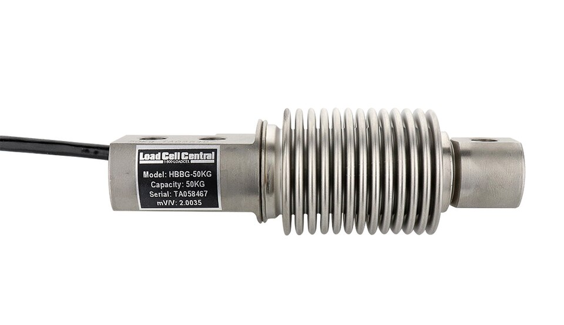

Calibration, uncertainty and condition measurements
A sensor can give the same number repeatedly and still be wrong. Calibration relates it to a reference. Verification checks that relationship against a tolerance.
Distinguish what a measurement can claim
Resolution is the smallest change the instrument shows. Repeatability is agreement under unchanged conditions. A reference instrument or known input is needed to assess error. Zero error adds an offset. Span error changes how far the output moves across the range. Hysteresis means the same input can read differently depending on which direction brought it there.

Photo by Daraceleste, scaled for the course. Original · CC BY-SA 4.0.


Photo by Nuno Nogueira ( Nmnogueira ). Original photo · CC BY-SA 2.5.

Watch on YouTube · Identify the load-cell bridge wiring and the amplifier breakout before applying a reference mass. Load Cell W/ HX711 Module Introduction (Load/Pressure/Weight Sensor) · orbita1.
Fit a simple model and check what it misses
For reference inputs x₁ and x₂ and sensor outputs y₁ and y₂, slope m = (y₂ − y₁)/(x₂ − x₁) and intercept b = y₁ − mx₁. Then x = (y − b)/m. Use a held-out point and repeat in both directions. A two-point model fits both endpoints even if the middle bows.
Example. 4–20 mA maps 0–100 kPa. Noise of ±0.04 mA corresponds to ±0.25 kPa before accounting for source, shunt, ADC and pressure reference errors. If two independent contributions are both stated as standard uncertainties, combine them by root sum of squares. A conservative worst-case limit instead combines stated bounds according to the measurement plan.
Make condition trends comparable
Vibration increases with speed and depends on sensor location and mounting. A condition record should identify sensor orientation, speed, loading, unit, bandwidth and setting. One frequency equal to rotational speed is evidence to interpret with the overall machine condition. Samples at 100 Hz cannot unambiguously represent components at 70 Hz without suitable filtering or another acquisition rate.
Report the reference, conditions and residual error along with the fitted values. DOE condition monitoring references · Pressure instrument training unit.